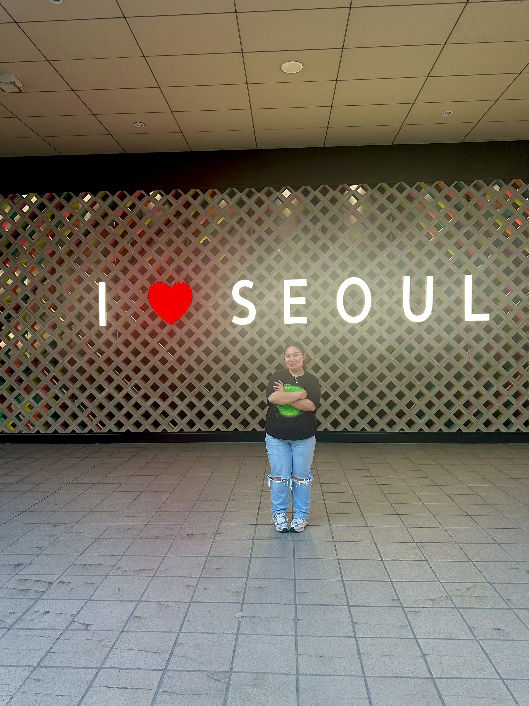
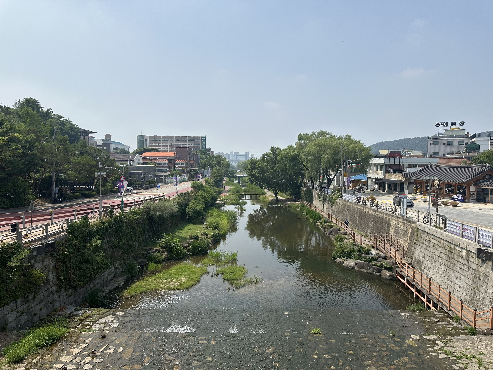
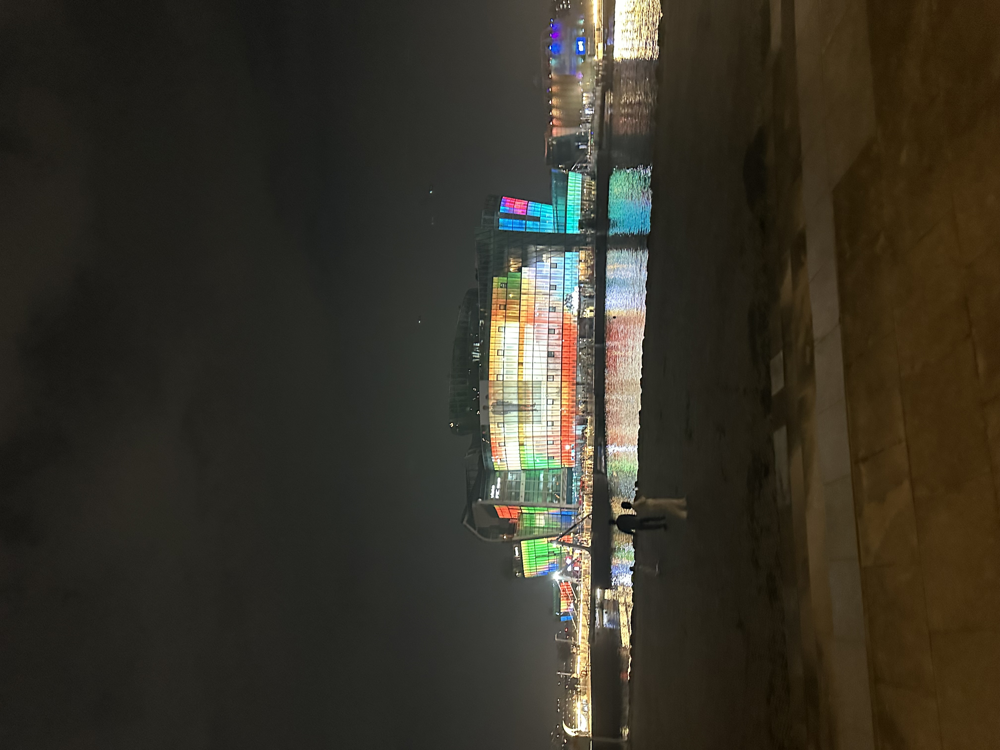

What is a Magellan Project?
Title description, Dec 7, 2017

A unique feature of W&J College, the Magellan Project is a project of possibilities. When pursuing a Magellan Project, you take the lead in your educational experience. Washington and Jefferson College provides funding so students can set sail in the summer months, exploring a passion, an interest, an internship, a study abroad opportunity, a research trip, or all of the above. You're out of the classroom, learning the ropes of whatever you've set your sights on. It could be right around the corner or right around the world.
My Magellan Project
My Second Magellan!!.
 My Magellan seeks to find out whether or not South Korea is living in the future. Through this project, I want to experience firsthand what it is to experience a country that is so praised for its technological sector. I will be gathering my information based on many things, such as history, convenience, and practicality. If you are interested in my Findings, please keep reading.
About Me

My name is Astrid Valladares, and I am a Junior at Washington and Jefferson College. Around campus, I am the secretary for the Latinx Culture Association and a student worker at the Clark Family Library. I was awarded a Magellan in Seoul, South Korea, to research about the history of South Korea and what events led to their technologic advancement. I picked this topic because, as a Computing and Information Systems major, I value technology as an important tool. As an American, I was interested in the differences/conveniences that were a part of everyday life in South Korea. I hope you enjoy my project as much as I enjoyed creating it!